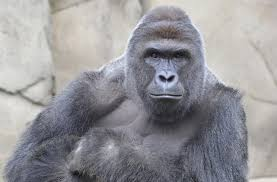

У большинства обезьян белки глаз обычно чёрные, как и зрачки (у людей — белые, что контрастирует со зрачками). Обезьяны отличаются от полуобезьян дневным образом жизни, сложным поведением, всеядностью с уклоном в растительноядность. С этим связаны их многие морфологические особенности, например, сложно устроенный мозг..
Обезья́ны

Обезья́ны[1] или «сухоносые» приматы[3] (лат. Haplorhini) — подотряд млекопитающих из отряда приматов. Обезьяны, к которым относится и человек, отличаются по ряду признаков от другого подотряда приматов — полуобезьян. У гаплориновых приматов сухой нос и менее развитое чувство обоняния. У обезьян превалирует рождение одного детёныша. В целом, этот подотряд считается более развитым в эволюционном отношении. Обезьяны обитают в тропических и субтропических регионах Америки, Африки (за исключением Мадагаскара), в Гибралтаре, а также в Южной и Юго-Восточной Азии вплоть до Японии. Человек населяет все континенты за исключением Антарктиды (где не живёт постоянно, но постоянно присутствует).
факты о обезьянаx
Древнейшими известными представителями подотряда обезьян являются тейярдина и архицебус, жившие около 55 млн лет назад. Ранее к обезьянам относили антрасимию из Гуджарата, н. Разделение обезьян (Haplorhini) и полуобезьян (Strepsirrhini) по молекулярным данным произошло около 87 млн лет назад[8]
Слово «обезьяна» появилось в древнерусском языке как заимствование из перс. بوزینه — «бузинэ» (возможно также влияние ст.‑слав. о҄пица) и стало широко известно после издания «Хожения за три моря» Афанасия Никитина. В словаре Д. Н. Ушакова уточняется, что abü zinä в арабском означает «отец блуда»[9].
Обезьяны, как наиболее близкие к человеку по физиологии, многократно запускались в суборбитальные и орбитальные полёты как до, так и после первого полёта человека в космос. Запуски обезьян в космос осуществляли: США, СССР, Франция, Аргентина, Россия, Иран. Всего в космос летали 32 обезьяны.